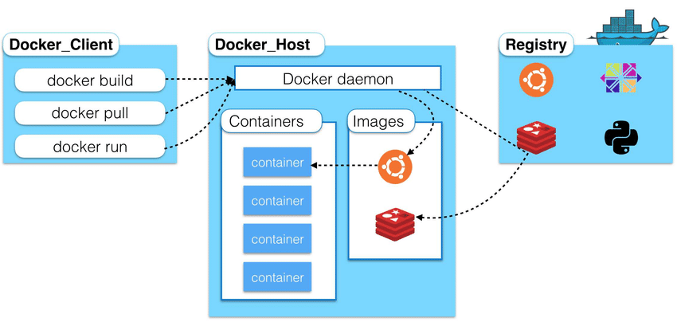

Chapter01. Docker概述
1. 简介
定义：Docker 是一个开源的应用容器引擎，基于 Go 语言 并遵从 Apache2.0 协议开源。
Docker 可以让开发者打包他们的应用以及依赖包到一个轻量级、可移植的容器中，然后发布到任何流行的 Linux 机器上，也可以实现虚拟化。
容器是完全使用沙箱机制，相互之间不会有任何接口（类似 iPhone 的 app）,更重要的是容器性能开销极低。

Docker的应用场景
- Web 应用的自动化打包和发布。
- 自动化测试和持续集成、发布。
- 在服务型环境中部署和调整数据库或其他的后台应用。
- 从头编译或者扩展现有的 OpenShift 或 Cloud Foundry 平台来搭建自己的 PaaS 环境。
优点：
- 快速，一致地交付您的应用程序
- 响应式部署和扩展
- 在同一硬件上运行更多工作负载
2. 架构
基本概念
Docker 包括三个基本概念:
- 镜像（Image）：Docker 镜像（Image），就相当于是一个 root 文件系统。比如官方镜像 ubuntu:16.04 就包含了完整的一套 Ubuntu16.04 最小系统的 root 文件系统。
- 容器（Container）：镜像（Image）和容器（Container）的关系，就像是面向对象程序设计中的类和实例一样，镜像是静态的定义，容器是镜像运行时的实体。容器可以被创建、启动、停止、删除、暂停等。
- 仓库（Repository）：仓库可看着一个代码控制中心，用来保存镜像。

其他概念
Docker 使用客户端-服务器 (C/S) 架构模式，使用远程API来管理和创建Docker容器。
Docker 容器通过 Docker 镜像来创建。
容器与镜像的关系类似于面向对象编程中的对象与类。容器对应对象，镜像则是类
Docker 镜像(Images)
Docker 镜像是用于创建 Docker 容器的模板，比如 Ubuntu 系统。
Docker 容器(Container)
容器是独立运行的一个或一组应用，是镜像运行时的实体。
Docker 客户端(Client)
Docker 客户端通过命令行或者其他工具使用 Docker SDK (https://docs.docker.com/develop/sdk/) 与 Docker 的守护进程通信。
Docker 主机(Host)
一个物理或者虚拟的机器用于执行 Docker 守护进程和容器。
Docker 仓库(Registry)
Docker 仓库用来保存镜像，可以理解为代码控制中的代码仓库。
Docker Hub(https://hub.docker.com) 提供了庞大的镜像集合供使用。
一个 Docker Registry 中可以包含多个仓库（Repository）；每个仓库可以包含多个标签（Tag）；每个标签对应一个镜像。
通常，一个仓库会包含同一个软件不同版本的镜像，而标签就常用于对应该软件的各个版本。我们可以通过 <仓库名>:<标签> 的格式来指定具体是这个软件哪个版本的镜像。如果不给出标签，将以 latest 作为默认标签。
Docker Machine
Docker Machine是一个简化Docker安装的命令行工具，通过一个简单的命令行即可在相应的平台上安装Docker，比如VirtualBox、 Digital Ocean、Microsoft Azure。
3.阿里云容器镜像服务
本小节通过一个阿里云镜像服务的demo演示docker如何运行。
注册阿里云容器镜像服务https://www.aliyun.com/product/acr?，并创建一个仓库
- 创建本地镜像
- push到阿里云远程仓库